오픈쇼케이스
냉장평대 추천, 메뉴와 매장 크기로 고르는 기준

샌드위치·파니니·샐러드처럼 부피 있는 메뉴를 넓게 펼쳐 보여 줄 매장이라면 선반 없는 냉장평대가 잘 맞습니다. 높이는 손님 시선과 동선에 맞는 800~900mm 사이를 기준으로, 조명은 식품 색이 선명한 주백색, 유리는 투명도 높은 백경유리를 우선 검토해 보세요.
안녕하세요. 카페와 샐러드·샌드위치 매장의 냉장평대를 매장 톤에 맞춰 제작하는 한성쇼케이스입니다.
냉장평대 추천을 부탁하시는 사장님들께 저는 제품 이름보다 메뉴판을 먼저 보여 달라고 말씀드립니다. 무엇을 올릴지에 따라 맞는 평대가 완전히 달라지기 때문입니다.
평대는 위에서 내려다보며 고르는 진열장이라, 높이와 조명, 유리의 투명도가 조금만 어긋나도 손님 눈에 메뉴가 덜 맛있어 보입니다.
반대로 기준만 잘 잡으면 진열한 메뉴가 없을 때조차 매장이 정돈돼 보입니다.
오늘은 냉장평대를 고를 때 확인할 기본 기준, 메뉴별로 평대가 맞는 경우와 다른 장비가 나은 경우, 그리고 실제 카페에 설치한 평대 사양을 함께 소개해 드리겠습니다.
1. 기본 기준: 높이·조명·유리
높이는 손님이 서서 내려다볼 때 메뉴가 한눈에 들어오는 800~900mm 사이가 무난합니다. 이보다 높으면 안쪽 메뉴가 안 보이고, 낮으면 허리를 숙여야 해 오래 들여다보지 않습니다.
조명은 주백색이 식품 본연의 색을 선명하게 보여 주는 편입니다. 유리는 백경유리를 쓰면 투명도가 높고 외부 조명 반사가 적어, 매장 조명이 밝아도 진열 메뉴가 흐릿해 보이지 않습니다.
- 높이는 800~900mm 사이 검토
- 주백색 조명으로 식품 색 살리기
- 백경유리로 반사 줄이기
2. 평대가 맞는 메뉴, 다른 장비가 나은 메뉴
샌드위치, 파니니, 샐러드 볼처럼 부피가 있고 위에서 보여 주면 좋은 메뉴는 넓은 상판의 평대가 맞습니다.
선반 없이 한 판에 펼쳐 두니 메뉴 수가 많아도 정리돼 보입니다.
반면 케이크나 섬세한 디저트는 일정 온도를 지키며 디테일을 보여 주는 전면 유리형 냉장 쇼케이스가, 쿠키·머핀 같은 구움과자는 계산대 옆 미니형이, 병음료는 앞이 트인 음료 쇼케이스가 더 잘 맞습니다.
한 장비로 모든 메뉴를 해결하려 하기보다 메인 진열은 평대로, 나머지는 메뉴에 맞는 장비로 나누는 구성이 안정적입니다.
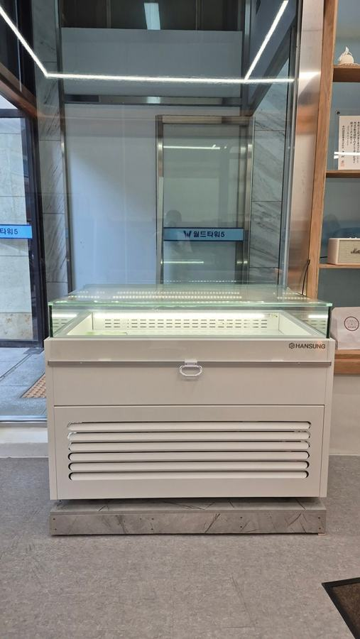
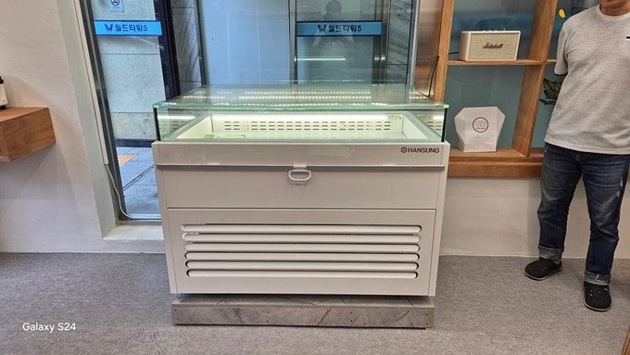
3. 매장 크기별 구성
테이크아웃 위주의 작은 매장은 계산대와 한 줄로 이어지는 평대 하나에 미니 쇼케이스를 더하는 정도가 동선을 해치지 않습니다.
평대 길이는 손님 한두 명이 서서 고르는 폭과 통로를 빼고 남는 치수로 정하세요.
좌석이 있는 중형 이상 매장은 평대를 입구 쪽에 두어 들어오자마자 메뉴가 보이게 하고, 케이크 쇼케이스와 음료 쇼케이스를 계산대 뒤나 옆에 배치하는 구성이 흔합니다.
여러 장비를 같은 색과 조명 톤으로 맞추면 매장 전체가 한 세트처럼 보입니다.
- 작은 매장은 평대와 미니형 조합
- 큰 매장은 평대를 입구 쪽에
- 장비 간 색·조명 톤 통일
4. 냉각 방식과 야간 관리
직냉식은 구조가 단순해 수리가 쉬운 대신 성에가 자주 생기고 위치별 온도 편차가 큽니다. 간냉식은 자동 제상으로 성에 걱정이 덜하고 내부 온도가 고르며 문을 연 뒤 회복도 빠릅니다.
손님이 수시로 손을 넣는 카페 평대라면 간냉식이 관리에 유리한 경우가 많습니다.
영업이 끝난 뒤에는 나이트커버로 덮어 냉기를 지키고 먼지를 막아 주세요. 맞춤 디자인이나 색상·규격을 바꾸면 제작 기간이 평균 2주 정도 걸리니 오픈 일정에 맞춰 미리 상담하시길 권합니다.
체크리스트
- 진열할 메뉴의 부피와 개수
- 높이 800~900mm와 손님 시선
- 주백색 조명과 백경유리
- 간냉식·직냉식 선택
- 나이트커버와 제작 기간
카페에 설치한 화이트 평대쇼케이스
샌드위치와 디저트를 함께 파는 카페에 설치한 1200×800×900 규격의 평대쇼케이스입니다. 화이트 바디에 주백색 조명, 백경유리를 쓰고 선반 없이 넓은 상판으로 구성했으며 나이트커버를 포함했습니다.
카페 현장에서 가장 무난하면서도 안정적으로 선택되는 조합입니다.
백경유리 덕분에 메뉴가 깨끗하게 보이고 매장 조명 반사가 적어 시야가 흐려지지 않습니다. 메뉴를 올리지 않은 상태에서도 디자인이 깔끔해 매장 분위기를 흐트러뜨리지 않는다는 점도 특징입니다.
같은 사양으로도 제작 안내가 가능합니다.
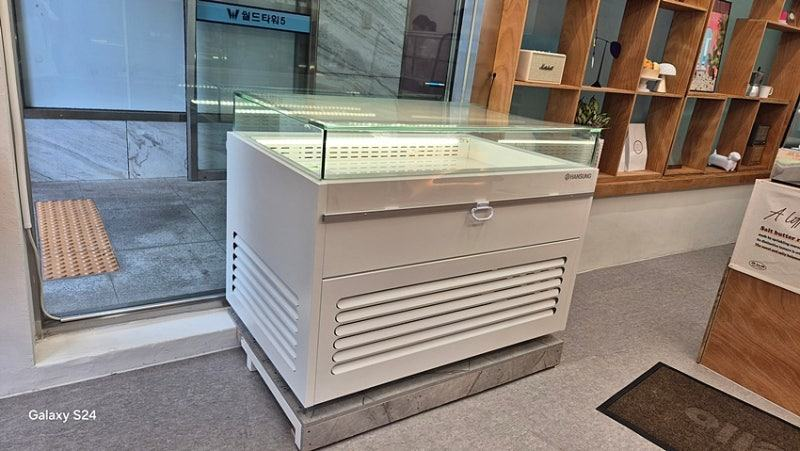
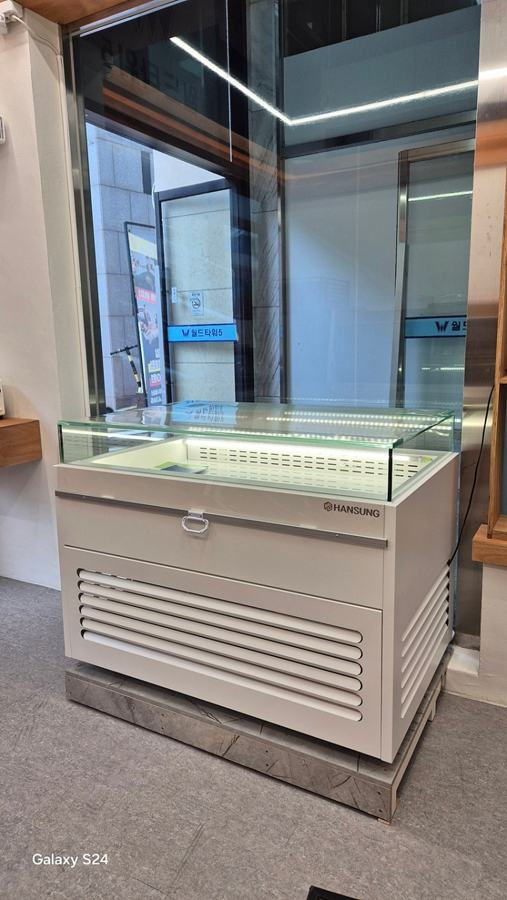
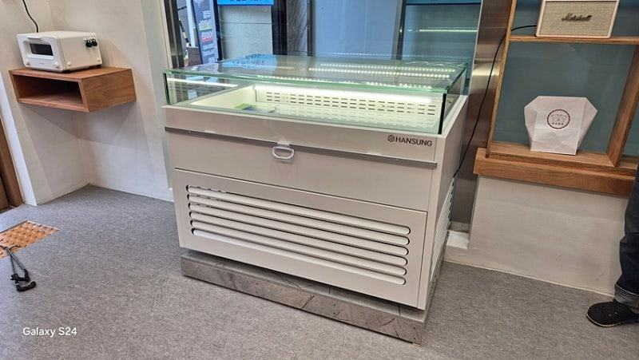
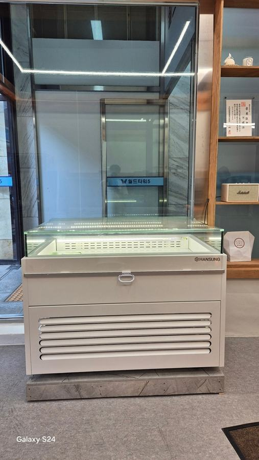
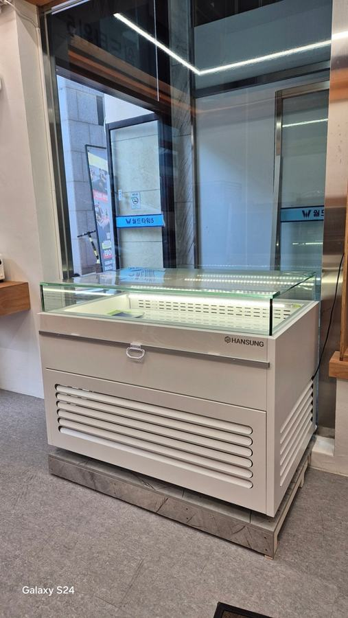
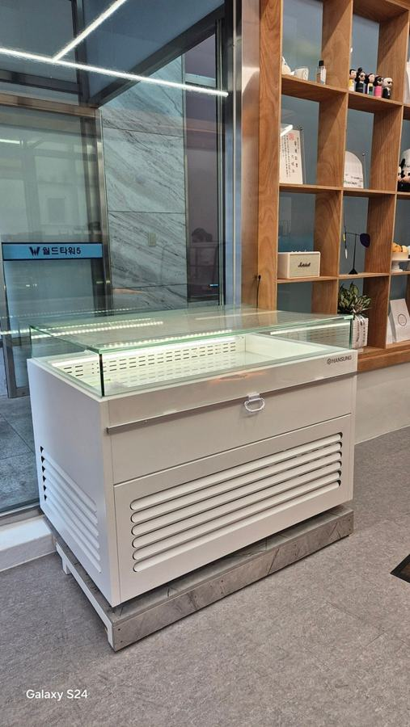
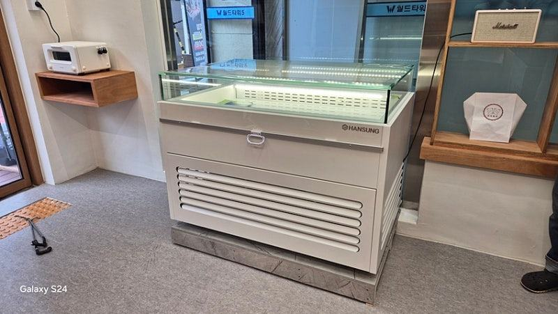
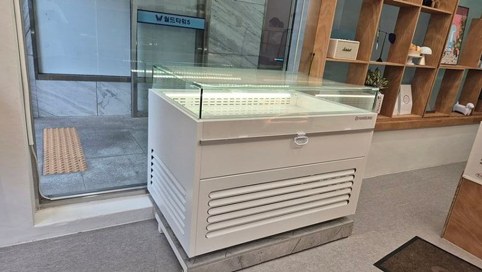
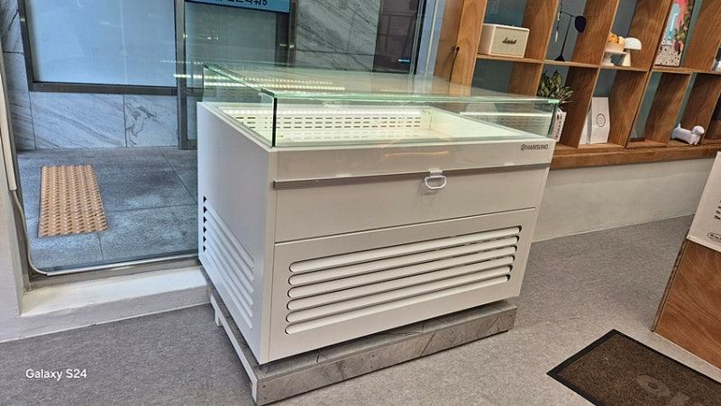
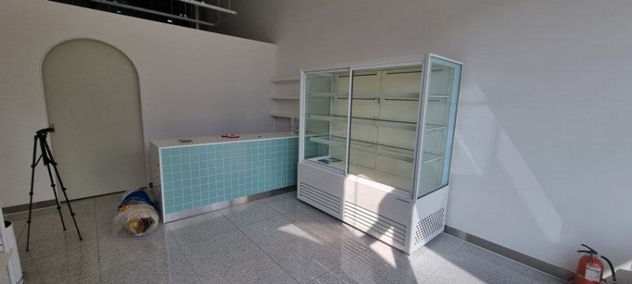
| 구분 | 평대쇼케이스 |
|---|---|
| 규격 | 1200 × 800 × 900 mm |
| 바디 색상 | 화이트 |
| 조명 | 주백색 |
| 유리 | 백경유리 |
| 선반 | 없음 |
| 추가 구성 | 나이트커버 |
자주 묻는 질문
냉장평대에 음료도 같이 올려도 되나요?
올릴 수는 있지만 병음료는 키가 커서 평대 위에서 다른 메뉴를 가리기 쉽습니다. 음료 비중이 크다면 앞이 트인 음료 쇼케이스를 따로 두는 편이 진열이 깔끔합니다.
평대 길이는 어떻게 정하나요?
한 번에 올릴 메뉴 수와 매장 폭에서 손님 서는 공간, 통로를 뺀 치수를 함께 보고 정합니다. 실측 치수와 메뉴 목록을 보내 주시면 길이를 함께 잡아 드립니다.
선반 없는 평대와 선반 있는 평대 중 무엇이 나을까요?
부피 있는 메뉴를 넓게 보여 주려면 선반 없는 쪽이, 작은 메뉴를 많이 올려야 하면 단을 나눈 쪽이 맞습니다.
메뉴 구성을 기준으로 정하시면 됩니다.
매장 조건에 맞춰 만드는 한성쇼케이스
원하시는 제품 사진과 설치할 공간 사진만 보내 주셔도 매장에 맞는 구성을 추천해 드립니다.
- 전국 240여 개 A/S 전담 센터 운영
- 본사 대량 자재 매입으로 품질 대비 합리적인 가격
- 유럽제·삼성 냉각 콤프레셔 적용
- 국내 최초 쇼케이스 전문 디자이너 상주
매장 폭과 원하는 진열 구성을 알려 주세요. 실측과 견적을 안내해 드립니다.
031-986-2458